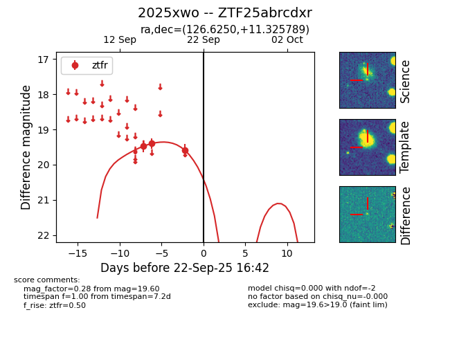
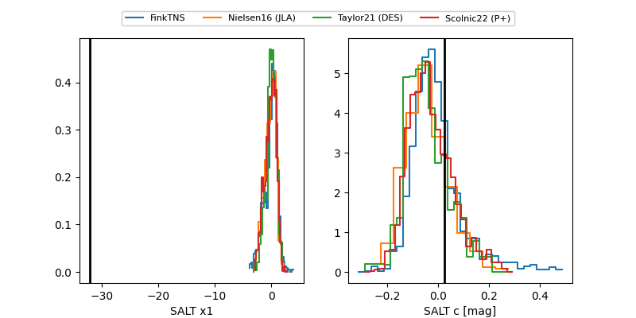

FINK: ZTF25abrcdxr
Lasair: ZTF25abrcdxr
ALeRCE: ZTF25abrcdxr
TNS: 2025xwo
YSE: 2025xwo
ZTF25abrcdxr (ztf,fink)
2025xwo (tns,yse)
equatorial (ra, dec) = (126.6250,+11.32579)
galactic (l, b) = (213.2766,+26.18211)


last ztfr=19.60
3 ztfr detections